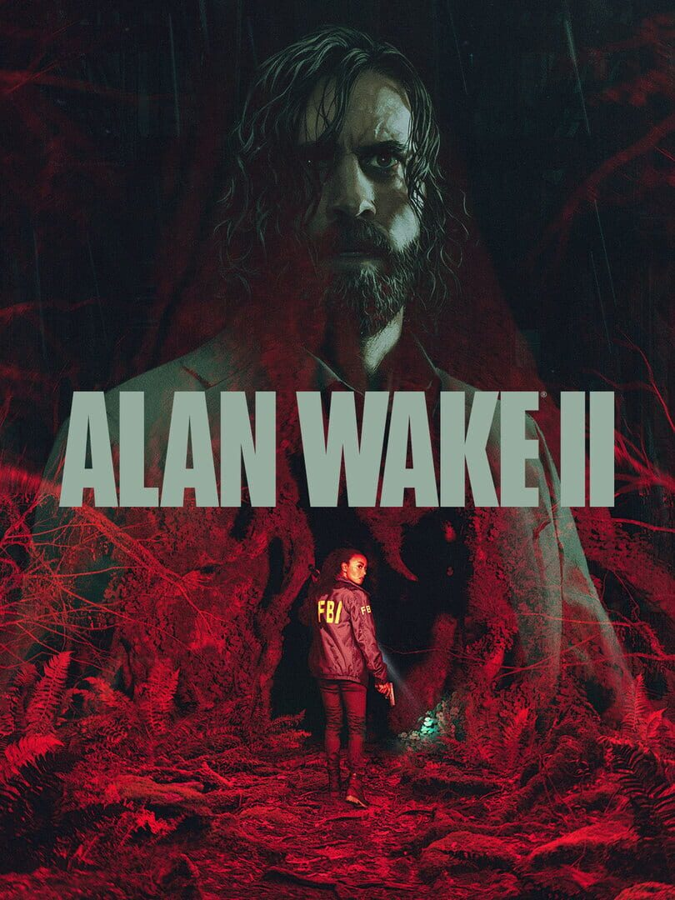

|  | |
| Playtime | Not Played |
| Last Activity | Never |
| Added | 11/5/2023 14:19:13 |
| Modified | 11/23/2024 15:49:05 |
| Completion Status | #Want to Play |
| Library | Playnite |
| Source | Wanderer |
| Platform | PC (Windows) |
| Release Date | 10/27/2023 |
| Community Score | 91 |
| Critic Score | 91 |
| User Score | |
| Genre | Adventure Shooter |
| Developer | Remedy Entertainment |
| Publisher | Epic Games |
| Feature | Single Player |
| Links | Official Epic Wikia Wikipedia Twitch YouTube Discord |
| Tag | |
A string of ritualistic murders threatens Bright Falls, a small-town community surrounded by Pacific Northwest wilderness. Saga Anderson, an accomplished FBI agent with a reputation for solving impossible cases arrives to investigate the murders. Anderson’s case spirals into a nightmare when she discovers pages of a horror story that starts to come true around her.
Alan Wake, a lost writer trapped in a nightmare beyond our world, writes a dark story in an attempt to shape the reality around him and escape his prison. With a dark horror hunting him, Wake is trying to retain his sanity and beat the devil at his own game.
Anderson and Wake are two heroes on two desperate journeys in two separate realities, connected at heart in ways neither of them can understand: reflecting each other, echoing each other, and affecting the worlds around them.
Fueled by the horror story, supernatural darkness invades Bright Falls, corrupting the locals and threatening the loved ones of both Anderson and Wake. Light is their weapon—and their safe haven — against the darkness they face. Trapped in a sinister horror story where there are only victims and monsters, can they break out to be the heroes they need to be?
# Solve a Deadly Mystery
What begins as a small-town murder investigation rapidly spirals into a nightmare journey. Uncover the source of the supernatural darkness in this psychological horror story filled with intense suspense and unexpected twists.
# Play As Two Characters
Experience both Alan Wake’s and Saga Anderson’s stories and see events unfold from different perspectives. Switch between Anderson’s life-or-death race to solve the case and Wake’s desperate attempts to rewrite his reality to escape the depths of the Dark Place.
# Explore Two Worlds
Experience two beautiful yet terrifying worlds, each with its own rich cast of characters and deadly threats. Discover majestic landscapes of Cauldron Lake in the Pacific Northwest and the idyllic towns of Bright Falls and Watery. Contrasting sharply, attempt to escape the nightmarish cityscape of the Dark Place.
# Survive With Light
With limited resources, take on powerful supernatural enemies in desperate close-combat situations. It takes more than just a gun to survive: light is the ultimate weapon in the fight against the darkness and will be your refuge when enemies threaten to overwhelm you.